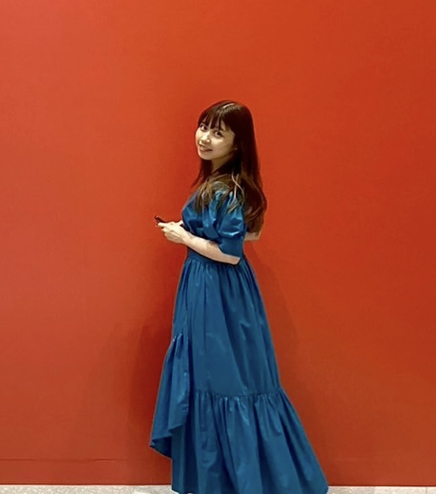

2026
Convergence Analysis via ODE Approach for Convex Optimization with Linear Equality Constraints
Preprint
Ph.D. Student · Keio University
I am a 2nd year Ph.D. student in Computer Science at Keio University, advised by Prof. Yasushi Narushima.
My research focuses on establishing theoretical guarantees for AI using techniques from optimization and dynamical systems.
I am particularly interested in developing methods to enhance the safety and reliability of neural networks.
Previously, I studied numerical schemes for solving a PDE during my undergraduate and master's studies.
This work naturally led me to develop an interest in optimization algorithms and their theoretical foundations.
Taking the continuous-time limit reveals a connection between numerical schemes and optimization algorithms through ODEs / SDEs.
This connection has motivated me to approach my research from a dynamical systems perspective.
Graduate School of Science and Technology, Keio University, 3-14-1 Hiyoshi, Kohoku-ku, Yokohama, 223-8522, Kanagawa, Japan

Preprint
Keio AI Research Center
led by Prof. Komei Sugiura, advancing interdisciplinary AI research in collaboration with CMU and partner institutions.
Keio University · Graduate School of Science and Technology
Waseda University · Department of Mathematics and Applied Mathematics, Graduate School of Fundamental Science and Engineering
Waseda University · Department of Mathematics, School of Fundamental Science and Engineering (Minor in Applied Mechanics and Aerospace Engineering)
In my spare time, I enjoy playing the violin. I began studying the violin at the age of five, and classical music has been an important part of my life ever since. In 2013, I appeared as a soloist at the Altenburger Musikfestival. As an undergraduate, I served as concertmaster for the Waseda Symphony Orchestra's 2018 European tour, performing in 12 cities, including the Berlin Philharmonie and the Musikverein in Vienna. In 2019, I performed Tchaikovsky's Violin Concerto with the orchestra, conducted by Daisuke Soga. In 2023, I was selected for the Be Phil Orchestra 2023 Japan, organized by the Berliner Philharmoniker, and performed at Suntory Hall under the baton of Kirill Petrenko, alongside Daishin Kashimoto, Ludwig Quandt, and other distinguished musicians. In 2026, I joined the Festival Orchestra of the Chofu International Music Festival, performing under the baton of Masaaki Suzuki. I have studied with Fumi Koseki and Yasuko Ohtani and I have also attended masterclasses with members of the Bayreuth Festival Quartet, as well as Mayumi Kanagawa, Reiko Watanabe, Simon James, and Sulki Yu. I have also attended music festivals and training programs in Japan and abroad, including in the United States and Italy.